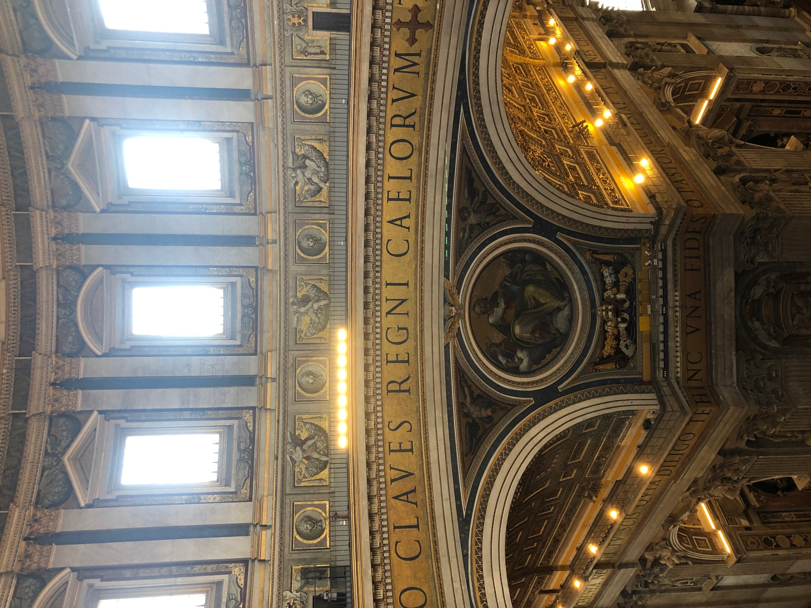

We walked slightly less far on Tuesday to get a slightly better breakfast. Chesk had my pain au chocolat and said it was orange flavoured. Bullet dodged.
Jonathan ended up with half a wholemeal honey croissant and half a thing made out of the same cardboard from the chocolate horn, but without the chocolate. I had the other half and impersonated Paul Hollywood when he got to the uncooked bit in the middle.
No gluten free stuff for Alison, but she is feeling better than usual. I suggested that the amount of passive smoking she has done has cleared out her system.
Off to the shops. We started in Pizza di Spagna for Sephora, then McDonalds. Chesk and Jake both had some cheese and bacon fries once the ordering screens had moved out of breakfast mode. Nanny didn’t have a coffee even though it was in a real cup.
Next, Brandy Melville. Freya and Chesk stayed there ages. Colette, Jonathan, Jake and Papy went on a walk up to the view that had been recommended. It was good, but not as good as the view passed on the way, we were told.
After what seemed like an age, Freya and Chesk came out with bags of stuff having tried on most of the shop. We wandered down the main shopping street until we all tried to reconvene.
Nanny and Papy had been so full of praise of Monday’s lunch that we went back. The two men in charge weren’t there, so Nanny didn’t get a kiss this time and there was no free prosecco. Alison liked it, I didn’t and Jonathan had the same that Papy had last time. It was as piggy and he described. We sat indoors, because Freya was very, very hot.
We took the kids for ice cream from and angry lady while Colette and Jonathan gave Nanny and Papy a head start to the Vatican, along the river, under the trees. Once over the border into the Vatican, I did a reccy while we hid in the shade. Jake and Chesk went to the toilet to cover their legs while Jonathan and I got in the queue and everyone else went home because of either the heat or the hypocritical imperial Roman church’s money grabbing display of wealth.
Just as we got to the metal detector, a lady who had lost her tour guide went to the front and tried to get through it three times with various bits of metal on her person. The big SLR camera was the most obvious, the third go was after she had removed the earpiece from the tour guide.
Finally we were in and in the shade. We soon counteracted this by climbing 551 steps to the top of the dome. We left all the right people behind, with the exception of Alison, who would have been fine.
It started sensibly and we popped out half way up on the inside. Wow.
Next, more steps, moving a few steps at a time and sweaty, with tiled walls that must have been dripping in it. As the dome curved in, it took on a fun house slant. Eventually, the curve was shallow enough for us to climb it, rather than circle it.
Finally, it became a tight spiral staircase to the top and a really rather nice view.
Half way down we could see the back of Jesus and his friends above the entrance. They were disappointingly two dimensional, apart from Jesus himself and his cross.
At the bottom we came out in the basilica. It was big and ostentatious. Chesk said it was “a bit swish”.
We came out through the tombs of the popes below the church. No pictures allowed.
With two nights left we are trying to finish things off. Jake had a limoncello. “Quite lemony, that” he said after some consideration. I’m not sure if he went cross eyed first.
That’s all the big list of Rome done. Just the little extras to mop up on the last full day.